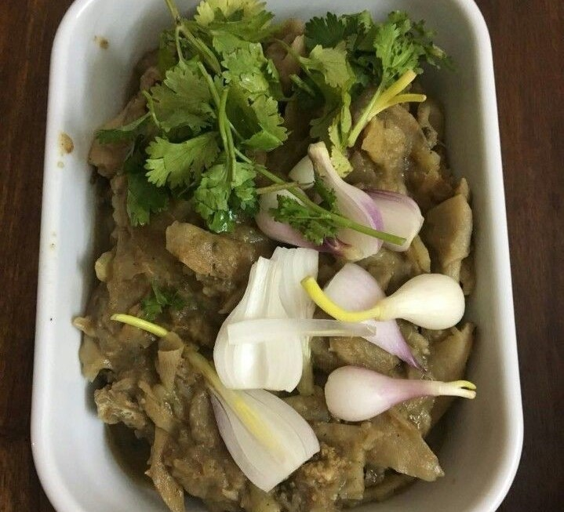
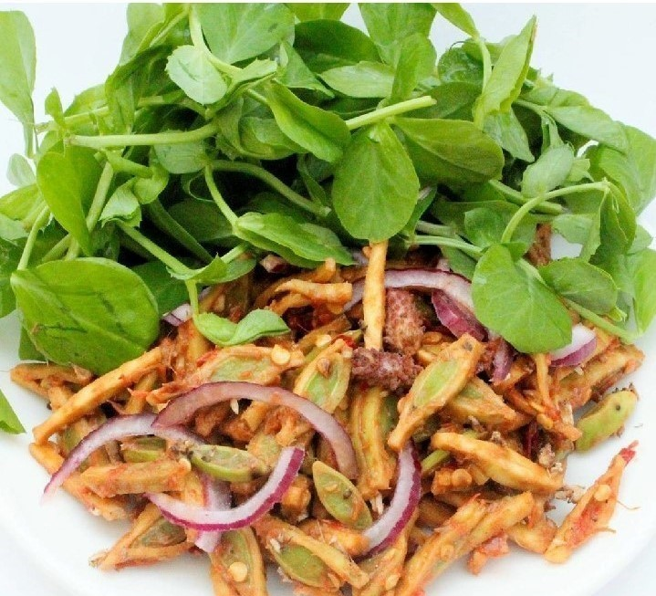
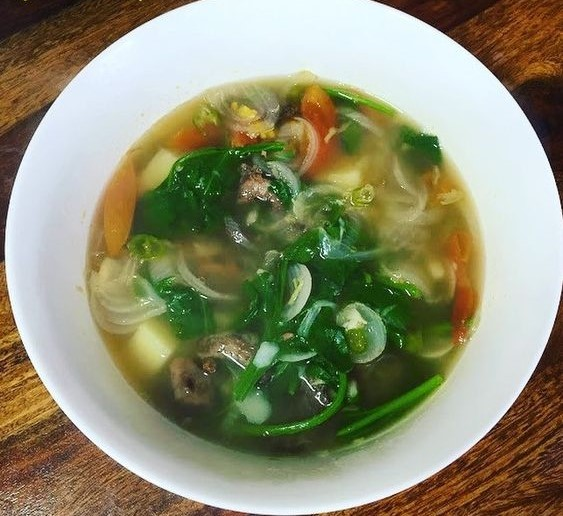
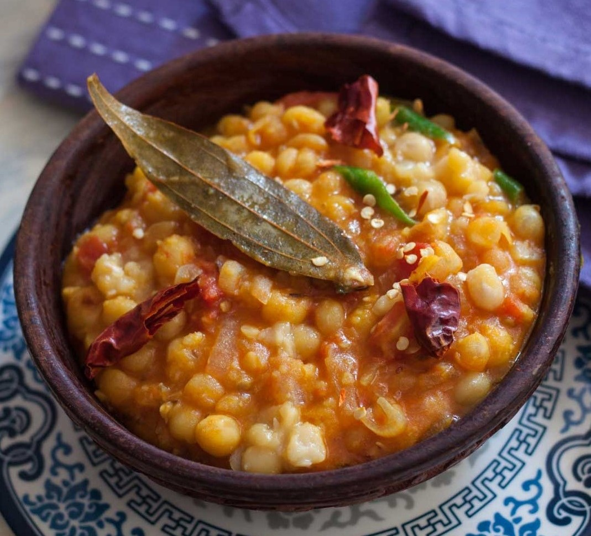
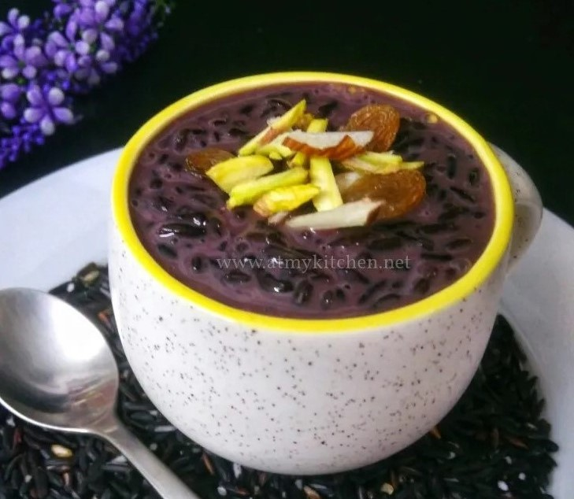
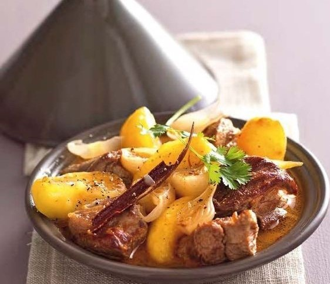
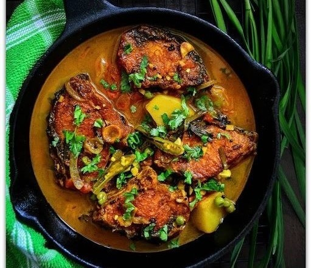
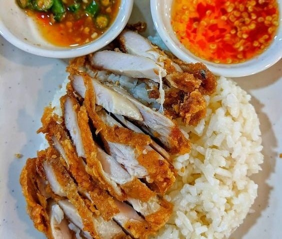

Eromba
A chutney that have vegetables boiled or steamed with a lot of red chillies or umorok (king chilli) with ngari (fermented fish), smoked or roasted fish and mashed together. "U-morok" – literally ‘tree chilli’ u = tree; morok = chilli. It is garnished with herbs like maroi

Singju
A piquant salad which is prepared with an assortment of raw vegetables, and can have varying combinations depending on preference or season. The vegetables are chopped into very thin juliennes, while the accompanying herbs and leaves are coarsely chopped or shredded.

Chamthong or kangshoi
A stew of any seasonal vegetables with coarsely chopped onions or spring onion, maroi - both yennam nakuppi and napakpi, ginger, ngari and salt, topped with ngari,[8] dried fish, or fried fish pieces and water. It is soupy in consistency and is eaten with rice.

Mangal Ooti Or Manipuri Dry Peas Curry
Mangal ooti or Manipuri dry peas curry from Manipur cuisine.
A very simple and easy yet delicious curry. You don’t need any powder spices to make it except turmeric.

Chahao kheer:A black rice pudding
Chahao is a very unique and special variety of rice that is available only in Manipur. It has a lovely aroma, texture and taste. It is scented with kapoor (camphor) . The same recipe can be used for white rice pudding also. Its actually a dessert but we can have it at breakfast or brunch

San thongba: a beef curry.
The dish is prepared by cooking chunks of meat in a mixture of spices which include turmeric, coriander, garam masala, black pepper, red chilli, cooked along with onions, shallots, ginger and garlic.

Nga thongba: a fish curry.
Fish curry is usually thought-about to be food for Manipuri because the majority of Manipuri dishes are prepared with fish. The Nga fish is a classic fish curry that's prepared with typically flavored, crushed pepper and different spices, to feature a particular style.

Yen thongba: a chicken curry.
MANIPURI CHICKEN CURRY is full of flavors and taste best with country foul.Use of Awa Phadigom ( Mexican coriander ) or culantro makes this curry quite different from other chicken curries.